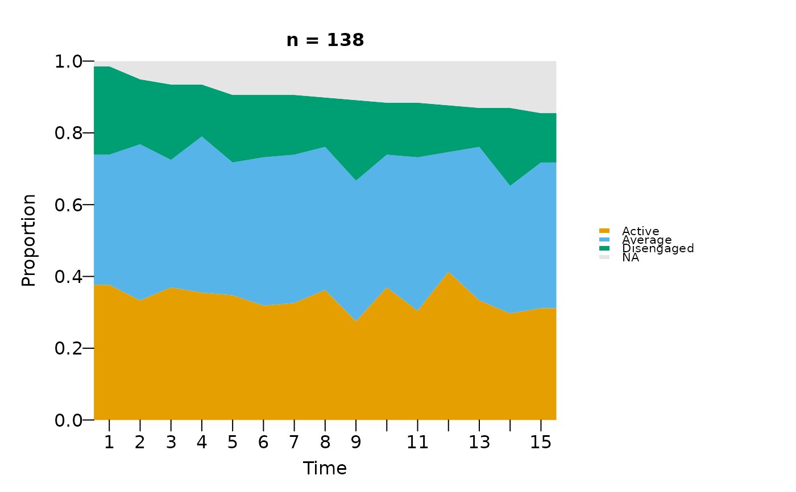

Draws how state proportions (or counts) evolve across time points. For
each time column, tabulates how many sequences are in each state and
renders the result as a stacked area (default) or stacked bar chart.
Accepts the same inputs as sequence_plot.
Usage
distribution_plot(
x,
group = NULL,
scale = c("proportion", "count"),
geom = c("area", "bar"),
na = TRUE,
state_colors = NULL,
na_color = "grey90",
frame = FALSE,
width = NULL,
height = NULL,
main = NULL,
show_n = TRUE,
time_label = "Time",
xlab = NULL,
y_label = NULL,
ylab = NULL,
tick = NULL,
ncol = NULL,
nrow = NULL,
legend = c("right", "bottom", "none"),
legend_size = NULL,
legend_title = NULL,
legend_ncol = NULL,
legend_border = NA,
legend_bty = "n"
)Arguments
- x
Wide-format sequence data. Accepts the same inputs as
sequence_plot:data.frame,matrix,netobject,net_clustering,netobject_group,net_mmm, ortna. When clustering info is available, one panel is drawn per cluster.- group
Optional grouping vector (length
nrow(x)) producing one panel per group. Ignored ifxis anet_clustering.- scale
"proportion"(default) divides each column by its total so bands fill 0..1."count"keeps raw counts.- geom
"area"(default) draws stacked polygons;"bar"draws stacked bars.- na
If
TRUE(default),NAcells are shown as an extra band colouredna_color.- state_colors
Vector of colours, one per state. Defaults to Okabe-Ito.
- na_color
Colour for the
NAband.- frame
If
TRUE(default), draw a box around each panel.- width, height
Optional device dimensions. See
sequence_plot.- main
Plot title.
- show_n
Append
"(n = N)"(per-group when grouped) to the title.- time_label
X-axis label.
- xlab
Alias for
time_label.- y_label
Y-axis label. Defaults to
"Proportion"or"Count"based onscale.- ylab
Alias for
y_label.- tick
Show every Nth x-axis label.
NULL= auto.- ncol, nrow
Facet grid dimensions.
NULL= auto:ncol = ceiling(sqrt(G)),nrow = ceiling(G / ncol).- legend
Legend position:
"right"(default),"bottom", or"none".- legend_size
Legend text size.
NULL(default) auto-scales from device width (clamped to[0.65, 1.2]).- legend_title
Optional legend title.
- legend_ncol
Number of legend columns.
- legend_border
Swatch border colour.
- legend_bty
"n"(borderless) or"o"(boxed).
Examples
# \donttest{
distribution_plot(as.data.frame(trajectories))

# }